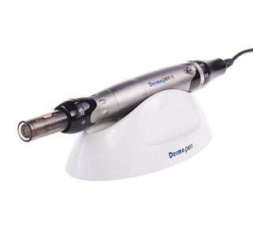

¿Qué mejora con la micropunción con Dermapen™?
Al realizar este tratamiento se generan microcanales que permiten una gran absorción del producto que se aplique durante la sesión. Mejorando la luminosidad de la piel, Acné, Estrías, Cicatrices, Manchas, Antiaging.

Dispositivo Dermapen™

Resultados